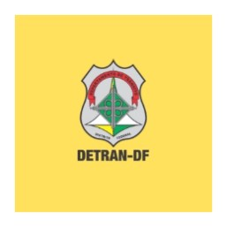

Infraestrutura de Dados Espaciais do Distrito Federal

Órgãos Participantes

O Instituto de Desenvolvimento Econômico e Social Urbano (IDE) é um órgão público federal, responsável pela gestão e desenvolvimento da infraestrutura de dados espaciais do DF.
Sobre a IDE-DF
A Infraestrutura de Dados Espaciais do Distrito Federal – IDE/DF foi
instituída pelo Decreto Nº 40.554, de 23 de março de 2020 com a seguinte
definição:
A Infraestrutura de Dados DE/DF abrange o conjunto de tecnologias, políticas, padrões e recursos humanos necessários para adquirir, processar, consolidar, distribuir, utilizar, manter e preservar a geoinformação produzida no âmbito do Distrito Federal. Infraestrutura de Dados Espaciais – IDE: conjunto integrado de tecnologias, políticas, mecanismos e procedimentos de coordenação e monitoramento, padrões e acordos, necessário para facilitar e ordenar a geração, o armazenamento, o acesso, o compartilhamento, a disseminação e o uso da geoinformação.
A Infraestrutura de Dados DE/DF abrange o conjunto de tecnologias, políticas, padrões e recursos humanos necessários para adquirir, processar, consolidar, distribuir, utilizar, manter e preservar a geoinformação produzida no âmbito do Distrito Federal. Infraestrutura de Dados Espaciais – IDE: conjunto integrado de tecnologias, políticas, mecanismos e procedimentos de coordenação e monitoramento, padrões e acordos, necessário para facilitar e ordenar a geração, o armazenamento, o acesso, o compartilhamento, a disseminação e o uso da geoinformação.
Objetivo
Conforme o Decreto Nº 40.554, a IDE/DF tem como principais objetivos:
- Promover o adequado ordenamento na geração, no armazenamento, no acesso, no compartilhamento, na disponibilização e no uso da geoinformação sobre o território e a população do Distrito Federal, aos órgãos ou entidades públicas pertencentes à Administração do Distrito Federal;
- Promover a utilização, pelas entidades participantes, dos padrões e normas definidos para a IDE/DF na produção e disponibilização das geoinformações;
- Evitar a duplicidade de ações e o desperdício de recursos na produção de geoinformações pelos órgãos da administração pública, principalmente por meio da divulgação dos metadados relativos aos dados disponíveis nasentidades e nos órgãos do Distrito Federal;
- políticas públicas e de ordenamento territorial; Instrumentalizar os órgãos e entidades do Distrito Federal nos processos de planejamento e de gestão de Promover a transparência ativa na divulgação das geoinformações produzidos pelas entidades participantes daIDE/DF.
Governança da IDE / DF
A IDE/DF é formada por:
-
Estrutura Tecnológica
A estrutura tecnológica da IDE/DF é constituída por: Conjunto de bancos e servidores de dados, geoserviços e de metadados de cada entidade participante da IDE/DF; Catálogo central de metadados e geoserviços; Geoportal, que garanta o acesso à geoinformação, seus metadados e serviços relacionados; Conjunto de tecnologias que garanta o trânsito da informação entre os servidores de dados setoriais, o catálogo central de metadados e o geoportal. -
Estrutura Executiva
A estrutura executiva da IDE/DF tem as seguintes competências e atribuições: Propor, analisar e deliberar sobre a política de geoinformações do Distrito Federal; Definir e revisar as normas e padrões que regem a produção, aquisição, armazenamento e compartilhamento das geoinformações no âmbito da IDE/DF; Estabelecer os procedimentos, avaliar e emitir parecer orientativo, nos termos do inciso III do art. 3º deste Decreto, para a produção de geoinformações no âmbito da Administração Pública do Distrito Federal; Garantir que os dados e geoserviços sejam implantados e mantidos em conformidade com os Padrões de Interoperabilidade de Governo Eletrônico; Dar suporte para implementação do exposto no inciso I do art. 5º aos órgãos ou entidades da Administração Pública do Distrito Federal que comprovarem não possuir capacidade técnica para implementá-los; Aprovar a participação das entidades privadas e a publicação das suas geoinformações; Acompanhar, analisar, propor revisões e solucionar as dúvidas relativas à IDE/DF; Representar o Governo do Distrito Federal em fóruns nacionais e internacionais na temática de geoinformações; Estabelecer acordos de cooperação e convênios nacionais e internacionais tendo como objeto o desenvolvimento das geoinformações e fortalecimento da IDE/DF; Resolver casos omissos pertinentes a IDE/DF.
A responsabilidade pelos dados publicados
- A gestão dos dados, geoserviços e de metadados, e a veracidade, precisão e corretude da geoinformação produzida é de inteira responsabilidade de cada entidade pública ou privada participante.
- Cada entidade participante é responsável por disponibilizar seus metadados ao catálogo central de metadados da IDE/DF.
- Eventuais restrições impostas à publicação e acesso as geoinformações são de responsabilidade dos órgãos produtores.
- Os metadados que compõem o catálogo devem seguir o perfil de Metadados Brasileiro – MGB.
Legislação
- DECRETO Nº 40.554, DE 23 DE MARÇO DE 2020 - Dispõe sobre a instituição da Infraestrutura de Dados Espaciais do Distrito Federal – IDE/DF e dá outras providências.
- PORTARIA Nº 64, DE 28 DE JULHO DE 2020 - Dispõe sobre a composição do Comitê Gestor da Estrutura Executivada Infraestrutura de Dados Espaciais do Distrito Federal – IDE/DF, instituído por meio do Decreto nº 40.554, de 23 de março de 2020. Alterada pela PORTARIA Nº 71, DE 24 DE AGOSTO DE 2020.
- RESOLUÇÃO Nº 1 - Aprova o Regimento Interno do Comitê Gestor da Estrutura Executiva da Infraestrutura de Dados Espaciais do Distrito Federal – IDE/DF.
Composição
O Comitê Gestor da IDE/DF é integrado por representantes titulares, e respectivos suplentes indicados
pelos seguintes órgãos e entidades do Governo do Distrito Federal:
- Secretaria de Estado de Desenvolvimento Urbano e Habitação – SEDUH, que o presidirá;
- Secretaria de Estado de Economia do Distrito Federal - SEEC;
- Secretaria de Estado de Meio Ambiente - SEMA;
- Companhia Imobiliária de Brasília - TERRACAP;
- CAESB;
- IBRAM;
- ADASA.
Governança da IDE / DF
A IDE/DF é formada por:
-
Estrutura Tecnológica
A estrutura tecnológica da IDE/DF é constituída por: Conjunto de bancos e servidores de dados, geoserviços e de metadados de cada entidade participante da IDE/DF; Catálogo central de metadados e geoserviços; Geoportal, que garanta o acesso à geoinformação, seus metadados e serviços relacionados; Conjunto de tecnologias que garanta o trânsito da informação entre os servidores de dados setoriais, o catálogo central de metadados e o geoportal. -
Estrutura Executiva
A estrutura executiva da IDE/DF tem as seguintes competências e atribuições: Propor, analisar e deliberar sobre a política de geoinformações do Distrito Federal; Definir e revisar as normas e padrões que regem a produção, aquisição, armazenamento e compartilhamento das geoinformações no âmbito da IDE/DF; Estabelecer os procedimentos, avaliar e emitir parecer orientativo, nos termos do inciso III do art. 3º deste Decreto, para a produção de geoinformações no âmbito da Administração Pública do Distrito Federal; Garantir que os dados e geoserviços sejam implantados e mantidos em conformidade com os Padrões de Interoperabilidade de Governo Eletrônico; Dar suporte para implementação do exposto no inciso I do art. 5º aos órgãos ou entidades da Administração Pública do Distrito Federal que comprovarem não possuir capacidade técnica para implementá-los; Aprovar a participação das entidades privadas e a publicação das suas geoinformações; Acompanhar, analisar, propor revisões e solucionar as dúvidas relativas à IDE/DF; Representar o Governo do Distrito Federal em fóruns nacionais e internacionais na temática de geoinformações; Estabelecer acordos de cooperação e convênios nacionais e internacionais tendo como objeto o desenvolvimento das geoinformações e fortalecimento da IDE/DF; Resolver casos omissos pertinentes a IDE/DF.
Governança da IDE / DF
A IDE/DF é formada por:
-
Estrutura Tecnológica
A estrutura tecnológica da IDE/DF é constituída por: Conjunto de bancos e servidores de dados, geoserviços e de metadados de cada entidade participante da IDE/DF; Catálogo central de metadados e geoserviços; Geoportal, que garanta o acesso à geoinformação, seus metadados e serviços relacionados; Conjunto de tecnologias que garanta o trânsito da informação entre os servidores de dados setoriais, o catálogo central de metadados e o geoportal. -
Estrutura Executiva
A estrutura executiva da IDE/DF tem as seguintes competências e atribuições: Propor, analisar e deliberar sobre a política de geoinformações do Distrito Federal; Definir e revisar as normas e padrões que regem a produção, aquisição, armazenamento e compartilhamento das geoinformações no âmbito da IDE/DF; Estabelecer os procedimentos, avaliar e emitir parecer orientativo, nos termos do inciso III do art. 3º deste Decreto, para a produção de geoinformações no âmbito da Administração Pública do Distrito Federal; Garantir que os dados e geoserviços sejam implantados e mantidos em conformidade com os Padrões de Interoperabilidade de Governo Eletrônico; Dar suporte para implementação do exposto no inciso I do art. 5º aos órgãos ou entidades da Administração Pública do Distrito Federal que comprovarem não possuir capacidade técnica para implementá-los; Aprovar a participação das entidades privadas e a publicação das suas geoinformações; Acompanhar, analisar, propor revisões e solucionar as dúvidas relativas à IDE/DF; Representar o Governo do Distrito Federal em fóruns nacionais e internacionais na temática de geoinformações; Estabelecer acordos de cooperação e convênios nacionais e internacionais tendo como objeto o desenvolvimento das geoinformações e fortalecimento da IDE/DF; Resolver casos omissos pertinentes a IDE/DF.
Governança da IDE / DF
A IDE/DF é formada por:
-
Estrutura Tecnológica
A estrutura tecnológica da IDE/DF é constituída por: Conjunto de bancos e servidores de dados, geoserviços e de metadados de cada entidade participante da IDE/DF; Catálogo central de metadados e geoserviços; Geoportal, que garanta o acesso à geoinformação, seus metadados e serviços relacionados; Conjunto de tecnologias que garanta o trânsito da informação entre os servidores de dados setoriais, o catálogo central de metadados e o geoportal. -
Estrutura Executiva
A estrutura executiva da IDE/DF tem as seguintes competências e atribuições: Propor, analisar e deliberar sobre a política de geoinformações do Distrito Federal; Definir e revisar as normas e padrões que regem a produção, aquisição, armazenamento e compartilhamento das geoinformações no âmbito da IDE/DF; Estabelecer os procedimentos, avaliar e emitir parecer orientativo, nos termos do inciso III do art. 3º deste Decreto, para a produção de geoinformações no âmbito da Administração Pública do Distrito Federal; Garantir que os dados e geoserviços sejam implantados e mantidos em conformidade com os Padrões de Interoperabilidade de Governo Eletrônico; Dar suporte para implementação do exposto no inciso I do art. 5º aos órgãos ou entidades da Administração Pública do Distrito Federal que comprovarem não possuir capacidade técnica para implementá-los; Aprovar a participação das entidades privadas e a publicação das suas geoinformações; Acompanhar, analisar, propor revisões e solucionar as dúvidas relativas à IDE/DF; Representar o Governo do Distrito Federal em fóruns nacionais e internacionais na temática de geoinformações; Estabelecer acordos de cooperação e convênios nacionais e internacionais tendo como objeto o desenvolvimento das geoinformações e fortalecimento da IDE/DF; Resolver casos omissos pertinentes a IDE/DF.